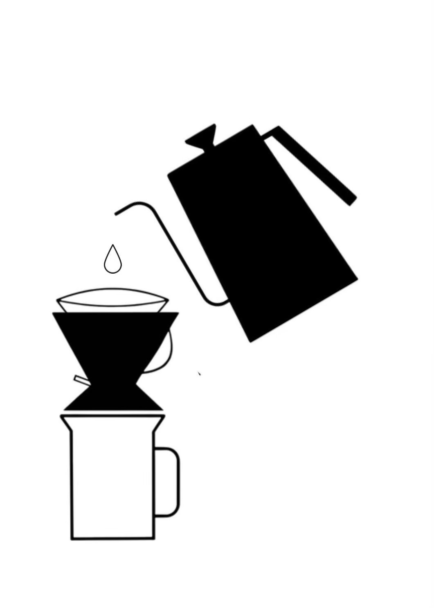
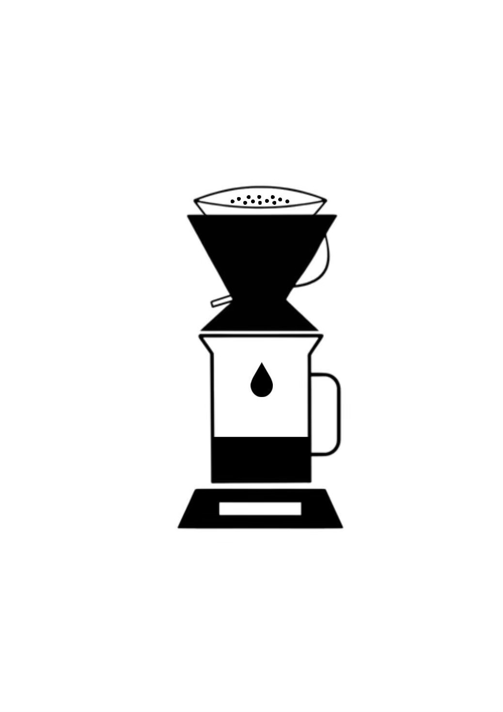
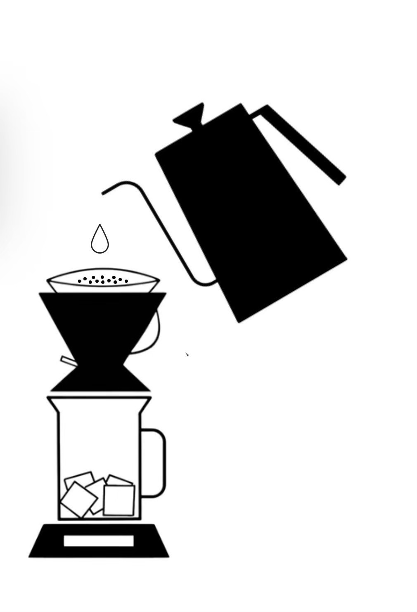
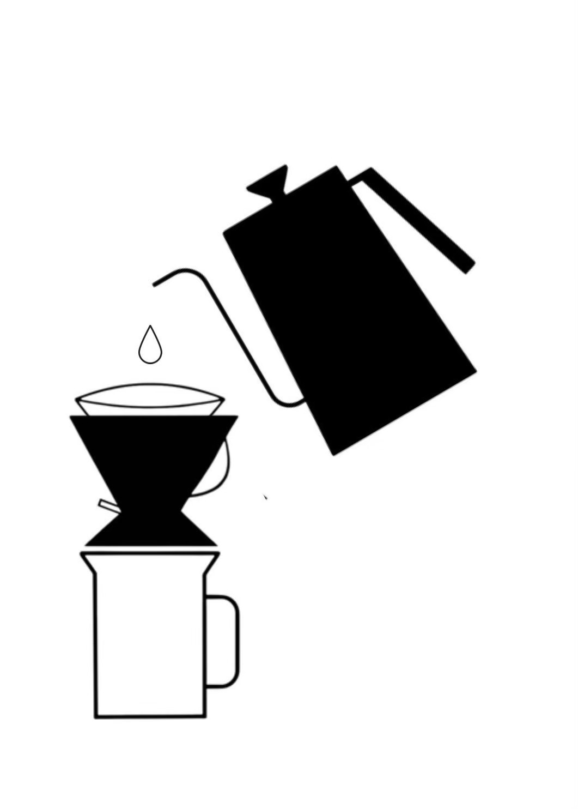
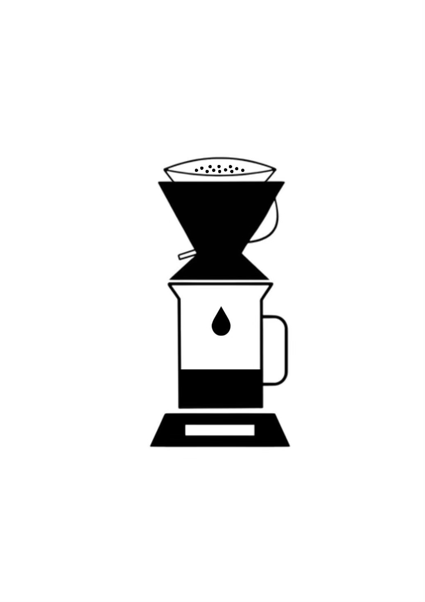
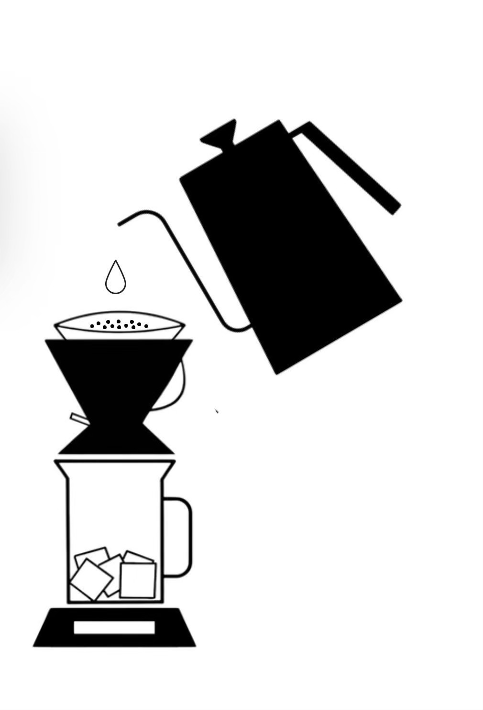

ブルンジコーヒー豆の特徴
原産国：ブルンジ共和国
品種：ブルボン
産地：カヤンザ、ムインガなど
焙煎度合い：中浅煎り
精製方法：フルウォッシュド、セミウォッシュド、ナチュラル、ハニーなど
ブルンジは標高が約1731mと高く、冷涼で肥沃な火山性土壌に恵まれた土地でコーヒー栽培が盛んです。
昼夜の寒暖差によってゆっくりと熟成するため、チェリーや柑橘系、アプリコットを思わせる
フルーティーな酸味とやわらかな甘みが特徴です。
浅煎りに近い焙煎度では、豆本来の香りと透明感のある味わいが際立ちます。
世界全体におけるブルンジ産コーヒーのシェアは約0.17％と、希少価値の高い豆です。
イベントで試飲していただいたお客様からは、「苦味が控えめで香りが華やか」との声を多くいただいています。
コーヒーの美味しい淹れ方
 





☕ 下準備
- ポットに水を入れて沸かす
- 沸いたらケトルにお湯を入れて「沸騰」を押す
- 豆を計量する：1杯(10g)／2杯(16g)
- フィルターを折り、ドリップスタンドにセットする
- ドリップスタンドのレバーが上向きになっているか確認
- ドリップスタンドは秤の上に乗せておく
☕ ホットコーヒー
- コーヒーミルに豆を入れてスタートボタンを押す
- ドリッパーにフィルターを軽く濡らし、ビーカーに溜まったお湯を捨てる
- ドリップスタンドにコーヒー粉を入れる
- タイマーをスタートさせると同時にお湯（90℃前後）を入れ、2分待つ
- 1杯：130ml ／ 2杯：260ml
- 抽出後、カップに注いで完成
🧊 アイスコーヒー
- コーヒーミルに豆を入れてスタートボタンを押す
- ビーカーとカップに氷を入れる
ビーカー：1杯(50g)／2杯(100g)
カップ：1杯(約20g) - ドリッパーにフィルターを軽く濡らし、ビーカーに溜まったお湯を捨てる
- ドリップスタンドにコーヒー粉を入れる
- タイマーをスタートと同時にお湯（90℃前後）を入れ、2分待つ
1杯：100ml ／ 2杯：200ml - 抽出後、レバーを下げてコーヒーを抽出
- 抽出後、コーヒーと氷をスプーンで軽く混ぜ、カップに注いで完成